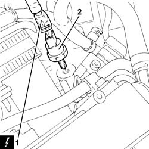
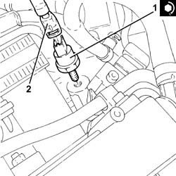

1056F54 Fuel pressure SENSOR - R.R.
- Path
- Procedures > 10 ENGINE UNIT > 1056 PETROL INJECTION SYSTEM > 1056F DIRECT PETROL INJECTION SYSTEM > 1056F54 Fuel pressure SENSOR - R.R.
- Kind
- repair procedure (removal / refitting; the operation number is the code)
- Applies to
- engines: 2.0 JTS; all production periods
- Interactive page
- https://sloeber94.github.io/elrnDB-aGt/en/#/2923160
Applies to: engines: 2.0 JTS; all production periods
 Removing
Removing
 Refitting
RefittingPosition the vehicle on the ramp
DRAIN THE FUEL HIGH-PRESSURE SYSTEM AS DESCRIBED BELOW.
Start engine.
Maintain idle for 2 minutes.
Remove the fuel pump relay.
Wait for the engine to stall.
Try to start the engine: if the engine starts within 10 seconds, wait for it to stall, then try to start it again; if the engine does not start withiin 10 seconds, continue cranking for a further 5 seconds.
Wait until the engine cools down.
Ensure that the ignition key is in the OFF position, then disconnect the negative battery terminal (-).
 | Name | Connector |
|---|---|---|
- | Battery |
Proceed with removal - 1016A40 ignition coil cover on cylinder head- r+r
Proceed with removal - 7055B54 under-engine guard - r r
1. Disconnect the electrical connection from the fuel pressure sensor.
| Name | Connector |
|---|---|---|
1 | Fuel pressure sensor |
2. Undo and remove the fuel pressure sensor.

Applies to: engines: 2.0 JTS; all production periods
Refitting
Removing1. Refit the fuel pressure sensor and tighten it to the specified torque.
 | Fastening | Component | Ø | Value (daNm) |
|---|---|---|---|---|
1 | - | FUEL PRESSURE SENSOR | M10 | 2.0 ÷ 2.4 |
2. Connect the electrical connection to the fuel pressure senor.

Applies to: engines: 2.0 JTS; all production periods
Proceed with refitting - 7055B54 under-engine guard - r r .
Proceed with refitting - 1016A40 ignition coil cover on cylinder head- r+r .
Connect the negative (-) battery terminal
Remove the car from the ramps.